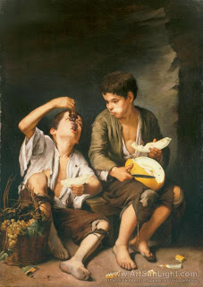

Shevuot (Oaths) 19 - Two Types of Oaths That Are Four
If one says, "An oath that I will eat" (a certain food object), or "An oath that I will not eat" - these are the two oaths explicit in the Torah . "An oath that I ate," or "An oath that I did not eat" - these are the two types of oath derived by exegesis.
If one swore, "An oath that I will not eat," and then, forgetting his oath, ate even a minute amount, he is liable - these are the words of Rabbi Akiva. The Sages said to Rabbi Akiva, "Where do we find regarding one who eats a minute amount of forbidden food that he is liable?" There has to be a minimum amount! Rabbi Akiva replied to them, "And where do we find that one speaks and brings an offering because of mere words?"
Art: Bartolome Esteban Murillo - Boys Eating Fruit